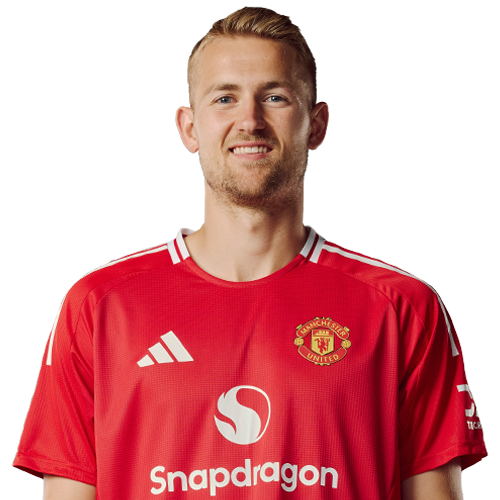

PITCHKEEP
Premier League ranks
Also: Ball Keep Football · BaseBallKeep
Player File · DEF MUN · Premier #296

Matthijs de Ligt
DEF · Man Utd · age 27 · £5.0m
2025/26 Premier League
| Year | Starts | Min | G | A | xG | xA | CS | GC | Bonus | YC | Sleeper | FPL |
|---|---|---|---|---|---|---|---|---|---|---|---|---|
| 2025/26 | 13 | 1170 | 1 | 0 | 1.38 | 0.83 | 1 | 20 | 5 | 0 | 30.2 | 43 |
FPL news
Injured — Back injury - Unknown return date
Plus
- 30.2 Sleeper BPL 2025 points (Pitch #284).
- Consensus 244.67 vs Sleeper #284 — the industry still believes more than 2025/26 counted.
Minus
- Injured; Back injury - Unknown return date.
- Board spread 214–284 (FPL xGI to Sleeper BPL 2025).
PitchKeep Take · The Premier
Matthijs de Ligt is a defender for Man Utd, age 27, £5.0m. The Premier ranks him 296th overall by splitting Sleeper BPL 2025 (#284, 30.2 points) with the consensus of 3 other boards (244.67). The industry still has him 39 spots ahead of the 2025/26 Sleeper count. The Premier pays that reputation something, not everything. Brand does not outrun a down year, and a down year does not erase a player Man Utd still builds around.
The 2025/26 Premier League line is 13 starts and 1170 minutes, 1 goals and 0 assists, 1 clean sheets, 20 goals against, 19 tackles and 88 CBI. Official FPL scored it at 43 points (3.3 per match) with 5 bonus. Sleeper's table turned the same counting stats into 30.2. Defenders get 10 a goal, 7 an assist, 6 a clean sheet, and −2 a goal against. CBI at 0.4 and tackles at 1 are how a centre-back cracks the overall 50.
Underlying: 1.38 xG, 0.83 xA, 2.21 xGI. The defensive events are the floor: 19 tackles, 88 clearances/blocks/interceptions, 1 shutouts. Sleeper is built to notice that. ICT and xGI boards are not, which is why a centre-back's spread on this desk is usually ugly and still informative. The friendliest board is FPL xGI at 214; the coldest is Sleeper BPL 2025 at 284.
Market: £5.0m, 0.0% owned into the 2026/27 FPL start, 4 boards on the file. Mid-range ownership means the name is known and not fully paid. That is usually where this desk lives — not the 70% tax, not the 0.2% dart. ICT 45.7.
Instruction: he is on the 400, which is already a statement, and he is not a star. Stash in Sleeper if the minutes are real. Do not let a Pitch screenshot make you start him over a Premier top-80. FPL flag: injured; Back injury - Unknown return date. Nearby on The Premier: Marco Bizot, Callum Wilson, Eddie Nketiah. Versus The Pitch (Sleeper-only #284), the hybrid moves him down to #296. That move is the third list doing its job.
He is 27, which on this desk is neither a dart nor a warning label. Prime-age defenders get ranked on what they just did and whether Man Utd still gives them the ball. 1170 minutes says yes. The 2026/27 FPL price (£5.0m) is the app's guess at whether that continues. The Premier is the blend of that guess and the box score.
Full-backs and centre-backs separate on this desk by attacking events. 1 goals and 0 assists are how a defender outruns his GA column. Without those, you are betting 1 clean sheets and the CBI stream (88) against 20 goals against at −2 a piece. Man Utd's 2026/27 defensive shape is therefore half of this player's rank. The other half already happened, across 13 starts.
How to use the file: The Pitch is the Sleeper-only 400 (he is #284 there). The Premier is the 50/50 with every other board we track. Attack, Midfield, Defence, and Keepers re-rank the same Sleeper table by position. BK Value on this page follows The Premier when you are on the hybrid calculator and The Pitch when you are on the Sleeper calculator. Same curve either way — 12,000 at 1.01. Unranked sources are skipped, never treated as 999, which is why a player missing from Yahoo's XI is not secretly ranked 400th.
Sleeper vs FPL
Same 2025/26 line, two scoring tables
Board graph
Spread 214–284 · 4 sources
Tape · 2025/26 Premier League
De Ligt Goal 90+6 | Tottenham vs Manchester United 2-2 Highlights | ✨🔥Premier League 2025 |
Every Board
Spread 214–284 · 4 sources
| Source | Rank |
|---|---|
| FPL xGI | 214 |
| FPL ICT Index | 259 |
| FPL 2025/26 Points | 261 |
| Sleeper BPL 2025 | 284 |
On The Premier nearby — Marco Bizot (#294) · Callum Wilson (#295) · Eddie Nketiah (#297) · Enes Ünal (#298)